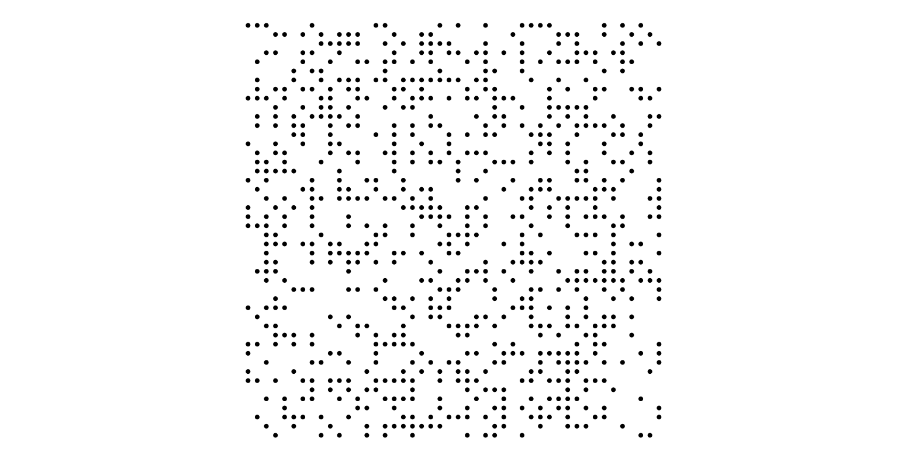
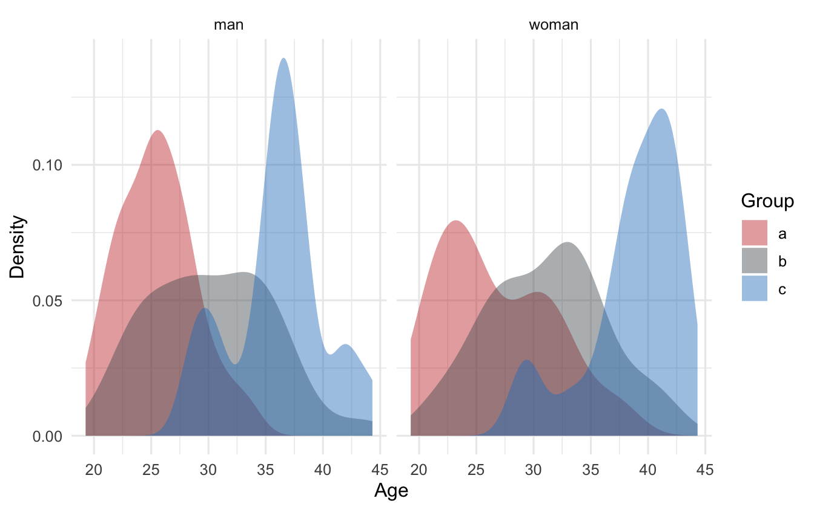
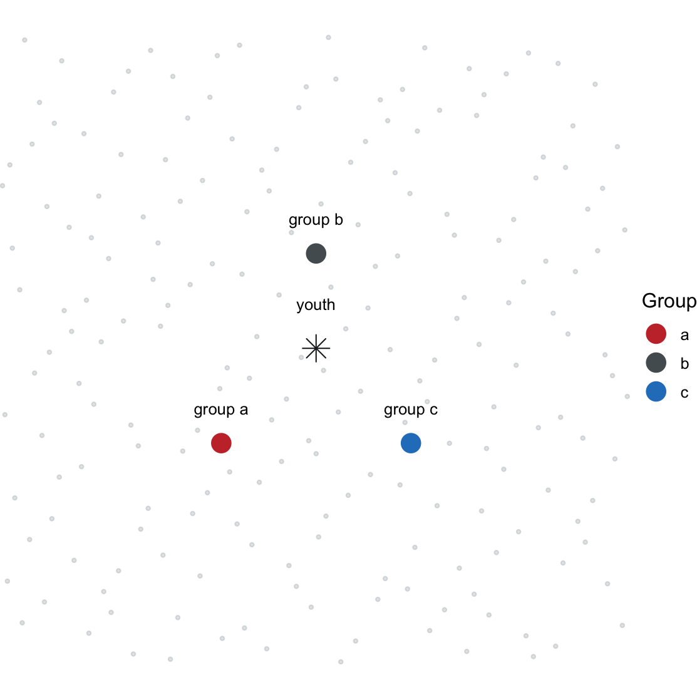
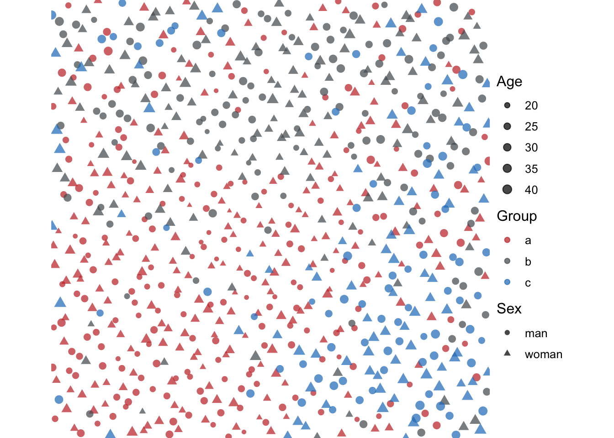
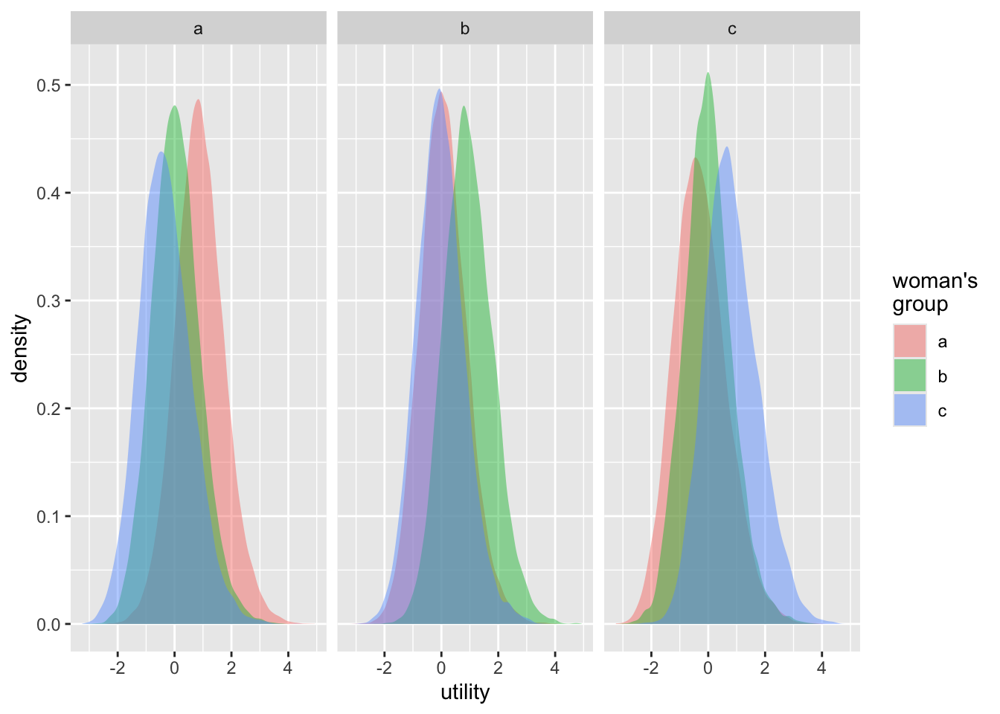
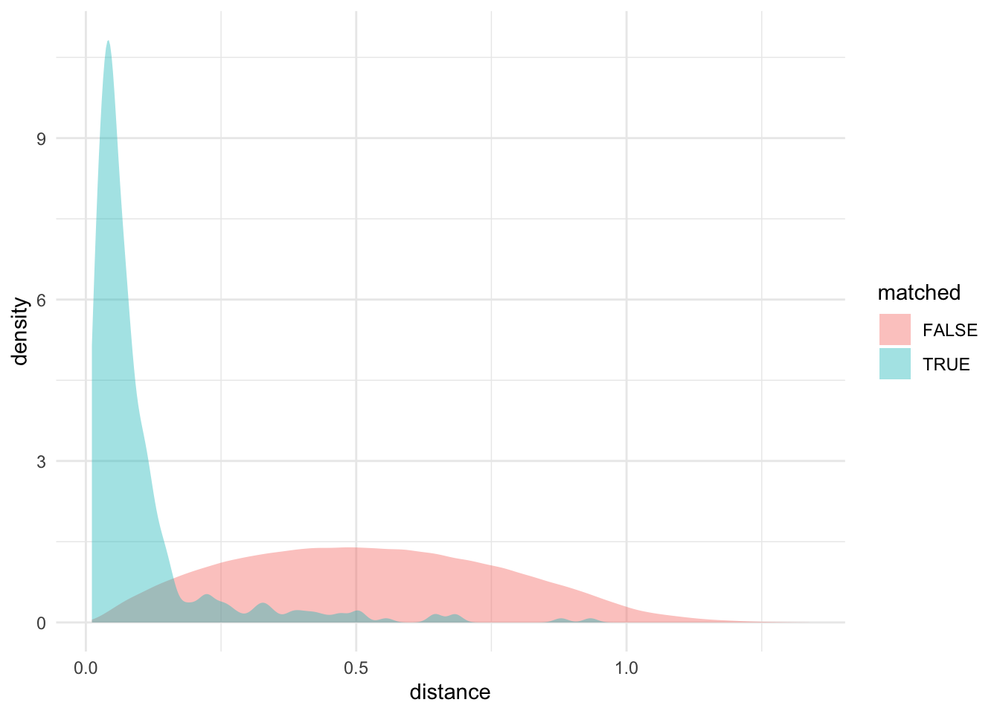
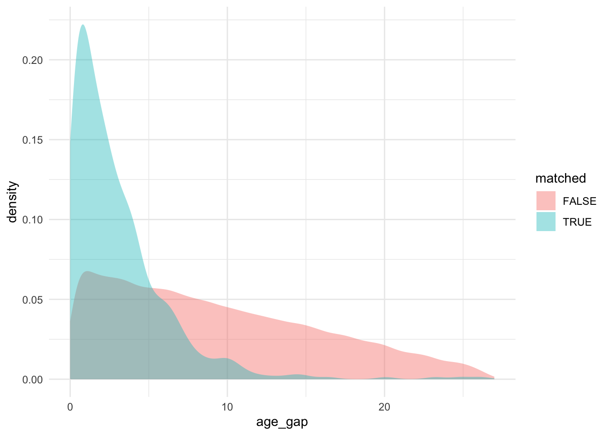

library(dplyr)
library(tidyr)
library(ggplot2)
library(mnorm)
library(matchingR)Discrete Choice Models of Assortative Mating, Part 1: Simulating a Marriage Market
assortative mating
discrete choice models
log-linear models
simulation
spatial analysis
The first in a series looking at the advantages and pitfalls of using DCM for AM research. This post develops a simulated data set
Introduction
There’s a been a percolating trend in sociological research on assortative mating away from log-linear modeling and towards a more flexible style of discrete choice modeling, primarily based on McFadden’s conditional logit model (1974).1 Examples include the work of Karen Haandrikman (2012), Aaron Gullickson (2021), and my colleague and student, Jesper Lindmarker (2025). That the tiny revolution in assortative mating research is taking place outside of economics, where discrete choice models were first developed, is perhaps not too surprising: sociologists are less constrained by issues of causal identification, general equilibrium, and stable matching assumptions that often preoccupy economists. Using an out-of-the-box discrete choice modeling approach largely elides these issues in favor of arriving at parameter estimates that aren’t so readibly interpreted in a causal or structural sense, but at least provide rich fodder for sociological interpretation.
But something that I think remains underappreciated is that the conditional logit model actually nests, and provides a more general formulation of, the log-linear models that have served as the bread and butter of mobility and assortative mating research. In other words, you can use the conditional logit model to obtain identical parameter estimates and standard errors as equivalently specified log-linear models. This knowledge is not really new: Richard Breen (1994) has shown this, as has John A. Logan (1983). And Logan even points to knowledge of the equivalence dating back to the 1970s. Beyond producing identical estimates as log-linear models for count data, Logan and Breen make the point that conditional logit model allow for the inclusion of idiosyncratic individual- and union-level covariates that correspond to the theorizing and claims making that sociologists and demographers are most interested in. So a goal of these posts is to set down an easily searchable and digestible beacon for future researchers seeking to integrate these models into their analytic practice, perhaps as an alternative or supplement to traditional log-linear modeling.
So, this series of research notes. My goal is to demonstrate, yet again, but in concrete, data-centric terms, the equivalence between conditional logistic regression (i.e., McFadden’s choice model) and log-linear analysis. But I want to go beyond that and also explore the greater possibilities, as well as the interpretive perils, that go along with this modeling approach. I do so using a simulated dataset representing some stylized but essential features of assortative mating and marriage markets.
This is just part one in a series. I won’t make it to model fitting here. This post just sets the scene using simulation, stipulating and then allocating singles to social and spatial positions in a stylized marriage market and then forming unions between those singles using an econometric matching algorithm. In subsequent posts, I’ll show how to fit log-linear and conditional logistic regression models to the resulting data, how the parameter estimates compare, and than how these parameter estimates might give us a skewed view of the “deeper” parameters that may drive union formation in simulated and real-world data sets.
Generating the marriage market
I consider a marriage market characterized by a simplified geometric/geographic space, consisting of quasi-randomly generated positions that are occupied by actors with a narrow set of attributes. So constructing the marriage market entails constructing a set of positions for singles to occupy, generating the singles that will occupy those positions, and finally assigning those singles to positions. I detail these steps in the sections below.
Positions
My goal is to create a semi-regular arrangement of what might be construed as housing units or residential positions for actors to occupy. These positions are static, and so the actors are conceived of as static. Their mobility is implicit in how space determines union formation, which I cover in the next post. This gives a geographic position to each actor that will influence subsequent matching. A simple way of doing this would be to use independent draws of a set of x and y coordinates from a uniform distribution. However, this creates a set of positions characterized by unusual gaps and overlaps that just doesn’t look “right” to my eye. So instead of using pseudo-random numbers, I use quasi-random numbers, in this case Halton sequences, to generate the x and y coordinates. Quasi-random numbers tend to be more evenly spaced than pseudo-random numbers, which feels right for this fictive geography.
First things first a few libraries. I prefer dplyr for data handling and ggplot for plotting. I use mnorm for its halton sequence generation:
We can generate and compare the pseudo- and quasi-random positions as follows:
set.seed(543)
n<-800
xy_sequence <- halton(n = n, base = c(2, 3), start = 1L)
xy<-bind_rows(
tibble(
position_id = seq_len(n),
x = xy_sequence[, 1],
y = xy_sequence[, 2],
type="halton"
),
tibble(
position_id = seq_len(n),
x=runif(n),
y=runif(n),
type="uniform"
)
)
ggplot(xy,aes(x=x,y=y)) +
geom_point(size = 0.75) +
facet_wrap(vars(type),nrow = 1) +
coord_equal(xlim = c(0, 1), ylim = c(0, 1), expand = TRUE) +
theme_void() +
theme(
aspect.ratio = 1,
plot.margin = margin(3, 3, 3, 3)
)
As I said, the Halton draws just look a bit better for the present purposes. It resembles a sort of social distancing heuristic, with positions filling out the space in an irregular, but not overly clumpy way. I save the position generator in a function, and then call it to produce positions.
make_positions <- function(n) {
xy_sequence <- mnorm::halton(n = n, base = c(2, 3), start = 1L)
tibble(
position_id = seq_len(n),
x = xy_sequence[, 1],
y = xy_sequence[, 2]
)
}
xy<-make_positions(n)Actors
For the actors, I assume they are split into two genders, men and women, with sebsequent unions constituted by opposite gendered pairs. I’ll make the market gender balanced for the sake of simplicity, and when all is said and done, each actor will be paired with one and only one opposite gender partner. Beyond gender and (eventually) position, I stipulate that each actor is characterized by just two other attributes: group membership, proxying something like race or ethnicity, and age, with the possibility of different age distributions for each group.
I use scaled beta distributions to generate the ages. This allows me to constrain the ages to fall between two bounds. This is represented in the following function:
scale_beta <- function(n, mean, precision, min_value = 0, max_value = 1) {
scaled_mean <- (mean - min_value) / (max_value - min_value)
shape1 <- scaled_mean * precision
shape2 <- (1 - scaled_mean) * precision
min_value + (max_value - min_value) * rbeta(n, shape1, shape2)
}With this function in hand, I can create a dataset of simulated actors, for whom I also generate identifiers, which will be convenient in subsequent posts. The mean ages of the groups differ, but the age ranges are the same.
scale_beta <- function(n, mean, precision, min_value = 0, max_value = 1) {
scaled_mean <- (mean - min_value) / (max_value - min_value)
shape1 <- scaled_mean * precision
shape2 <- (1 - scaled_mean) * precision
min_value + (max_value - min_value) * rbeta(n, shape1, shape2)
}
actors <-
tibble(
group = c("a", "b", "c"),
age_mean = c(25, 30, 35),
n = c(200, 120, 80)
) |>
expand_grid(tibble(sex = c("man", "woman"))) |>
reframe(
person = seq_len(n),
age = scale_beta(n, age_mean, precision = 7, min_value = 18, max_value = 45),
.by = c(group, age_mean, sex)
) |>
ungroup() |>
mutate(id = row_number()) |>
select(id, sex, group, age)
slice_sample(actors,n=10)# A tibble: 10 × 4
id sex group age
<int> <chr> <chr> <dbl>
1 633 woman b 24.6
2 296 woman a 19.9
3 471 man b 26.0
4 348 woman a 27.8
5 625 woman b 37.6
6 444 man b 32.2
7 454 man b 29.4
8 651 man c 41.8
9 333 woman a 24.6
10 698 man c 36.0The differing sampled age distributions, broken down separately for men and women, can be visualized using a density plot:
group_colors <- c(a = "#c73535", b = "#555c60", c = "#287fc4")
ggplot(actors, aes(age, fill = group)) +
geom_density(alpha = 0.45, color = NA) +
facet_wrap(~ sex) +
scale_fill_manual(values = group_colors) +
labs(x = "Age", y = "Density", fill = "Group") +
theme_minimal(base_size = 12)
Assigning actors to locations
I want to introduce some group and age segregation into the simulated marriage market. I accomplish this by designating a set of attraction points. A point in the center pulls in younger actors. Then a set of three, group-specific poles outside the center pull in members of the respective group.
poles <- tibble(
group = c("a", "b", "c","youth"),
group_x = c(0.25, 0.50, 0.75, 0.5),
group_y = c(0.25, 0.75, 0.25, 0.5)
)
ggplot() +
geom_point(
data = xy,
aes(x, y),
size = 0.8,
alpha = 0.28,
color = "#9aa0a3"
) +
geom_point(
data = poles,
aes(group_x, group_y, color = group),
size = 5
) +
geom_text(
data = poles,
aes(group_x, group_y, label = group, color=group),
nudge_y = 0.055,
size = 8,
show.legend = FALSE
) +
coord_equal(xlim = c(-0.03, 1.03), ylim = c(-0.03, 1.03), expand = FALSE) +
scale_color_manual(values = group_colors) +
labs(x = "Spatial coordinate x", y = "Spatial coordinate y", color = "Group") +
theme_void(base_size = 12) +
theme(
legend.position="none",
plot.margin = margin(4, 4, 4, 4)
)
To assign actors to location, I use utility-based probabilistic assignment approach. The utility function for each actor is based on the distance to the actor’s respective group pole and on the distance to the youth attraction point, with the latter depending on the age of the actor him/herself. A small, random noise term is also added to each utility. Then iterate through locations, assigning
noise_scale<-2
utilities <- actors |>
select(id, group, age) |>
crossing(xy) |>
left_join(poles, by = "group") |>
mutate(
youth_x = 0.5,
youth_y = 0.5,
youth_pull = (max(age) - age) / (max(age) - min(age)),
group_distance = log(sqrt((x - group_x)^2 + (y - group_y)^2) + 0.01),
youth_distance = log(sqrt((x - youth_x)^2 + (y - youth_y)^2) + 0.01),
utility = -1 * group_distance - 2 * youth_pull * youth_distance
) |>
ungroup() |>
mutate(
utility = utility + noise_scale * rnorm(n(), mean = 0, sd = sd(utility))
) |>
arrange(desc(utility))
assigned_actors <- integer()
assigned_locations <- integer()
assignments <- vector("list", nrow(actors))
n_assigned <- 0L
for (row_index in seq_len(nrow(utilities))) {
option <- utilities[row_index, ]
if (
option$id %in% assigned_actors ||
option$position_id %in% assigned_locations
) {
next
}
n_assigned <- n_assigned + 1L
assignments[[n_assigned]] <- option |>
select(id, position_id)
assigned_actors <- c(assigned_actors, option$id)
assigned_locations <- c(assigned_locations, option$position_id)
if (n_assigned == nrow(actors)) {
break
}
}
actors<-
actors |> select(id,sex,group,age) |>
left_join(bind_rows(assignments), by = "id") |>
left_join(xy, by = "position_id") |>
select(-position_id)The resulting distribution of actors can be visualized as follows:
ggplot(actors, aes(x, y, color = group, shape = sex, size = age)) +
geom_point(alpha = 0.72) +
coord_equal(xlim = c(-0.03, 1.03), ylim = c(-0.03, 1.03), expand = FALSE) +
scale_color_manual(values = group_colors) +
scale_size_continuous(range = c(1.1, 3.2)) +
labs(x = "Spatial coordinate x", y = "Spatial coordinate y", color = "Group", shape = "Sex", size = "Age") +
theme_void(base_size = 12) +
theme(plot.margin = margin(4, 4, 4, 4))
The result is a population with group structure, age structure, and spatial structure. In the next post, I’ll uses these actors and locations to create unions based on two-sided partner preferences and a stable matching approach.
Forming unions
To generate unions from this set of singles, I use a utility-based, stable matching frame work that makes use the of the Gale-Shapley algorithm. For the time being, I forego a two-sided approach. So men and women don’t have separate utility functions for each other. Rather, I assume that every possible pair has a single utility. This assumption could be relaxed later.
Calculating utilities for possible unions
I first ennumerate all possible combinations of men and women. I calculate utilities as a linear combination of
coefs <- list(
same_group = 0.5,
age_gap = -0.1,
distance = -1,
noise = 0.5
)
union_utils<-
cross_join(
actors |> filter(sex=="man") |> rename_with(\(x) paste0(x, "_man")),
actors |> filter(sex=="woman") |> rename_with(\(x) paste0(x, "_woman"))
) |>
mutate(
age_gap = abs(age_man - age_woman),
distance = sqrt((x_man - x_woman)^2 + (y_man - y_woman)^2),
same_group = 1L*(group_man==group_woman),
utility = coefs$same_group*same_group +
coefs$age_gap*age_gap +
coefs$distance*log(distance + 0.01),
utility = utility+coefs$noise*rnorm(n(),mean=0,sd=sd(utility))
) |>
arrange(id_man,id_woman)We can plot the distribution of utilities by group, which shows, unsurprisingly, that utilities are higher for within group pairings, but with substantial heterogeneity and distributional overlap.
ggplot(data=union_utils, aes(x=utility,fill=group_woman)) +
geom_density(alpha = 0.45, color = NA) +
facet_wrap(~group_man) +
labs(fill="woman's\ngroup")
Tranforming utilities into unions
I use the the Gale-Shapley algorithm implemented in the matchingR package to transform the complete set of utilities into one-to-one dyadic matches. The package expects matrices of proposer utilities and reviewer utilities, where I treat the men as proposers and the women as reviewers. The proposer matrix contains the utilities men (in columns) would obtain from being matched with a given woman (in rows). The reviewer matrix contains the utilities the women (now in columns) would obtain from being matched with each man (in rows). In our case, we calculate a single utility for each union, and men’s and women’s matrices are transposes of each other. But in principle these matrices could differ more substantially in their elements. For example, the utility function that men use to evaluate women could differ from the function that women use to evaluate men. That’s a wrinkle to consider in a different post. In any case, the code to construct the matrices and make the matches is as follows:
men<-sort(filter(actors,sex=="man")$id)
women<-sort(filter(actors,sex=="woman")$id)
utility_matrix<-xtabs(utility~id_woman+id_man, data=union_utils)
unions <- matchingR::galeShapley.marriageMarket(
proposerUtils = utility_matrix,
reviewerUtils = t(utility_matrix)
)
matches <- tibble(
id_man = as.integer(colnames(utility_matrix)),
id_woman = as.integer(rownames(utility_matrix)[as.integer(unions$proposals)]),
matched = TRUE
)
union_utils <-
union_utils |>
left_join(matches) |>
mutate(matched = if_else(is.na(matched),FALSE,TRUE)) A quick glance suggests that the final matches align with what might be expected based on the utility functions used for simulation: The simulated matches are closer together in distance and age, and are more likely to share group membership, compared to the non-matches.
union_utils |>
group_by(matched) |>
summarize(across(c(distance,age_gap,same_group),~mean(.x)))# A tibble: 2 × 4
matched distance age_gap same_group
<lgl> <dbl> <dbl> <dbl>
1 FALSE 0.522 6.61 0.379
2 TRUE 0.0957 3.03 0.79 And we can compare matches to non-matches graphically for distance and age gap
ggplot(data=union_utils,aes(x=distance,fill=matched)) +
geom_density(alpha=0.4,color=NA) +
theme_minimal()
ggplot(data=union_utils,aes(x=age_gap,fill=matched)) +
geom_density(alpha=0.4,color=NA) +
theme_minimal()
A reusable data generating function
For convenience, the full simulated data generator can be made into a function wrapper for other functions that create actors, positions, position assignments, and matches. The main function, simulate_marriage_market(), returns the exploded man-woman pair data, with one row for every possible union and a logical matched variable identifying the Gale-Shapley matches.
scale_beta <- function(n, mean, precision, min_value = 0, max_value = 1) {
stopifnot(max_value > min_value, mean > min_value, mean < max_value)
scaled_mean <- (mean - min_value) / (max_value - min_value)
shape1 <- scaled_mean * precision
shape2 <- (1 - scaled_mean) * precision
min_value + (max_value - min_value) * rbeta(n, shape1, shape2)
}
make_positions <- function(n) {
xy_sequence <- mnorm::halton(n = n, base = c(2, 3), start = 1L)
tibble(
position_id = seq_len(n),
x = xy_sequence[, 1],
y = xy_sequence[, 2]
)
}
make_group_counts <- function(n, group_shares) {
stopifnot(n %% 2 == 0, all(group_shares >= 0), sum(group_shares) > 0)
group_shares <- group_shares / sum(group_shares)
raw_counts <- (n / 2) * group_shares
group_counts <- floor(raw_counts)
remainder <- (n / 2) - sum(group_counts)
if (remainder > 0) {
add_to <- order(raw_counts - group_counts, decreasing = TRUE)[seq_len(remainder)]
group_counts[add_to] <- group_counts[add_to] + 1L
}
group_counts
}
make_actors <- function(
n = 800,
group_shares = c(a = 0.50, b = 0.30, c = 0.20),
age_means = c(a = 25, b = 30, c = 35),
age_precision = 7,
min_age = 18,
max_age = 45
) {
group_counts <- make_group_counts(n, group_shares)
tibble(
group = names(group_counts),
age_mean = unname(age_means[group]),
n = unname(group_counts)
) |>
expand_grid(tibble(sex = c("man", "woman"))) |>
reframe(
person = seq_len(n),
age = scale_beta(
n,
age_mean,
precision = age_precision,
min_value = min_age,
max_value = max_age
),
.by = c(group, age_mean, sex)
) |>
ungroup() |>
mutate(id = row_number()) |>
select(id, sex, group, age)
}
assign_locations <- function(
actors,
xy,
poles,
noise_scale = 2
) {
youth_pole <- poles |> filter(group == "youth")
group_poles <- poles |> filter(group != "youth")
utilities <- actors |>
select(id, group, age) |>
crossing(xy) |>
left_join(group_poles, by = "group") |>
mutate(
youth_x = youth_pole$group_x,
youth_y = youth_pole$group_y,
youth_pull = (max(age) - age) / (max(age) - min(age)),
group_distance = log(sqrt((x - group_x)^2 + (y - group_y)^2) + 0.01),
youth_distance = log(sqrt((x - youth_x)^2 + (y - youth_y)^2) + 0.01),
utility = -1 * group_distance - 2 * youth_pull * youth_distance,
utility = utility + noise_scale * rnorm(n(), mean = 0, sd = sd(utility))
) |>
arrange(desc(utility))
actor_position <- rep(NA_integer_, max(actors$id))
location_taken <- rep(FALSE, max(xy$position_id))
n_assigned <- 0L
for (row_index in seq_len(nrow(utilities))) {
actor <- utilities$id[row_index]
location <- utilities$position_id[row_index]
if (is.na(actor_position[actor]) && !location_taken[location]) {
actor_position[actor] <- location
location_taken[location] <- TRUE
n_assigned <- n_assigned + 1L
}
if (n_assigned == nrow(actors)) break
}
assignments <- tibble(
id = actors$id,
position_id = actor_position[actors$id]
)
actors |>
left_join(assignments, by = "id") |>
left_join(xy, by = "position_id") |>
select(-position_id)
}
make_pair_utilities <- function(actors, coefs) {
cross_join(
actors |> filter(sex == "man") |> rename_with(\(x) paste0(x, "_man")),
actors |> filter(sex == "woman") |> rename_with(\(x) paste0(x, "_woman"))
) |>
mutate(
age_gap = abs(age_man - age_woman),
distance = sqrt((x_man - x_woman)^2 + (y_man - y_woman)^2),
same_group = 1L * (group_man == group_woman),
utility = coefs$same_group * same_group +
coefs$age_gap * age_gap +
coefs$distance * log(distance + 0.01),
utility = utility + coefs$noise * rnorm(n(), mean = 0, sd = sd(utility))
) |>
arrange(id_man, id_woman)
}
match_pairs <- function(union_utils) {
utility_matrix <- xtabs(utility ~ id_woman + id_man, data = union_utils)
unions <- matchingR::galeShapley.marriageMarket(
proposerUtils = utility_matrix,
reviewerUtils = t(utility_matrix)
)
tibble(
id_man = as.integer(colnames(utility_matrix)),
id_woman = as.integer(rownames(utility_matrix)[as.integer(unions$proposals)]),
matched = TRUE
)
}
simulate_marriage_market <- function(
seed = 543,
n = 800,
group_shares = c(a = 0.50, b = 0.30, c = 0.20),
age_means = c(a = 25, b = 30, c = 35),
age_precision = 7,
min_age = 18,
max_age = 45,
location_noise = 2,
union_noise = 0.5,
poles = tibble(
group = c("a", "b", "c", "youth"),
group_x = c(0.25, 0.50, 0.75, 0.5),
group_y = c(0.25, 0.75, 0.25, 0.5)
),
coefs = list(
same_group = 0.5,
age_gap = -0.1,
distance = -1,
noise = union_noise
)
) {
set.seed(seed)
actors <- make_actors(
n = n,
group_shares = group_shares,
age_means = age_means,
age_precision = age_precision,
min_age = min_age,
max_age = max_age
)
xy <- make_positions(n)
actors <- assign_locations(actors, xy, poles, noise_scale = location_noise)
union_utils <- make_pair_utilities(actors, coefs)
matches <- match_pairs(union_utils)
union_utils |>
left_join(matches, by = c("id_man", "id_woman")) |>
mutate(matched = if_else(is.na(matched), FALSE, matched))
}References
Breen, Richard. 1994. “Individual Level Models for Mobility Tables and Other Cross-Classifications.” Sociological Methods & Research 23 (2): 147–73. https://doi.org/10.1177/0049124194023002001.
Gullickson, Aaron. 2021. “A Counterfactual Choice Approach to the Study of Partner Selection.” Demographic Research 44: 513–36. https://doi.org/10.4054/DemRes.2021.44.22.
Haandrikman, Karen, and Leo J. G. van Wissen. 2012. “Explaining the Flight of Cupid’s Arrow: A Spatial Random Utility Model of Partner Choice.” European Journal of Population 28 (4): 417–39. http://www.jstor.org/stable/23274970.
Lindmarker, Jesper, and Benjamin F. Jarvis. 2025. “However Far Away? The Spatial Contingencies of Assortative Mating.” SocArXiv. https://doi.org/10.31235/osf.io/4tq8z_v1.
Logan, John A. 1983. “A Multivariate Model for Mobility Tables.” American Journal of Sociology 89 (2): 324–49. http://www.jstor.org/stable/2779144.
McFadden, Daniel. 1974. “Conditional Logit Analysis of Qualitative Choice Behaviour.” In Frontiers in Econometrics, edited by Paul Zarembka, 105–42. Economic Theory and Mathematical Economics. New York: Academic Press. http://elsa.berkeley.edu/pub/reprints/mcfadden/zarembka.pdf.
Footnotes
Confusingly, this is also sometimes referred to as the multinomial logistic regression model. In fact, the conditional logit model nests what sociologists and political scientists often call the multinomial model.↩︎